Nakashi, Ibaraki: things to do, food and stays
Nakashi · Ibaraki
Nakashi
Highlighted on the Ibaraki map.

Stay
THE BOTANICAL RESORT 林音(リンネ)
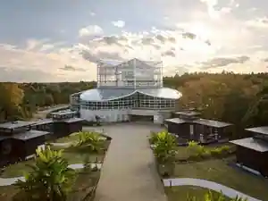
THE BOTANICAL RESORT Hayashi Oto (Rinne)
Dining
蔵＋蕎麦 な嘉屋
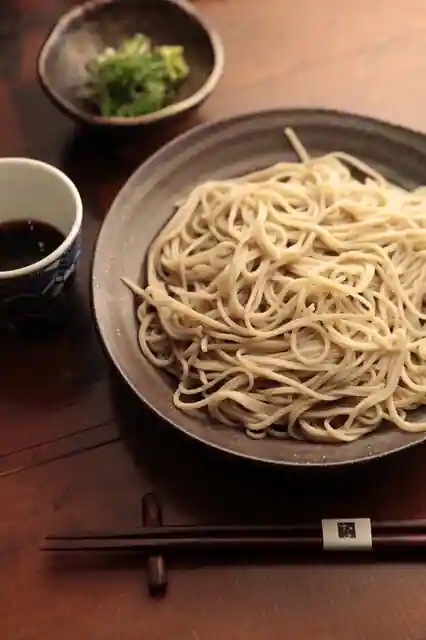
Kura + Soba Na Ka Ya
だぼう
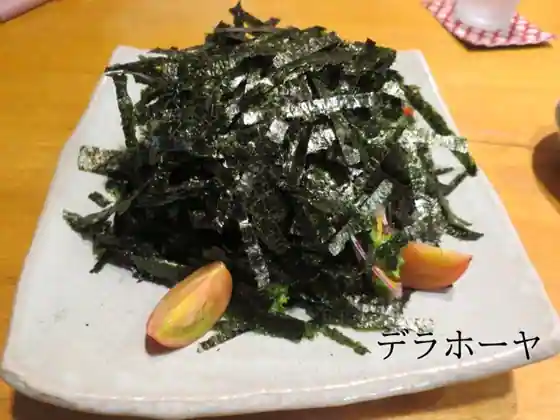
Dabo
三六庵
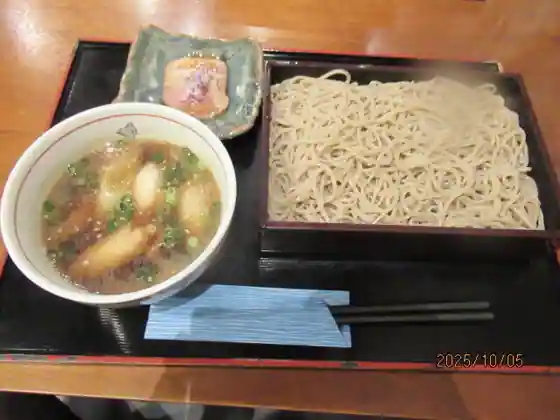
Sanroku Iori
レストラン キャロッツ
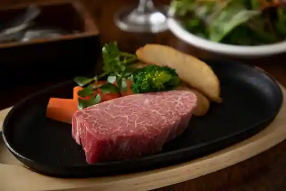
Restaurant Kyarottsu
パン工房 ぐるぐる 那珂本店
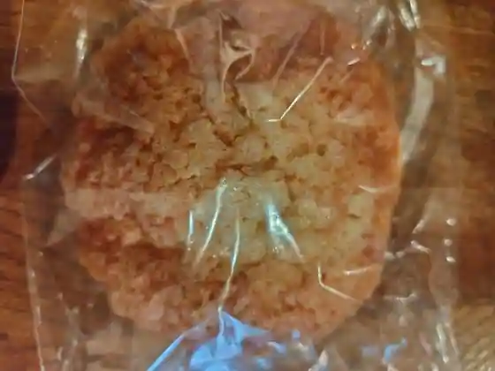
Bakery Kobo Guruguru Naka Hon
スタミナラーメン多幸
Sutamina Ramen Tako
かたばみ
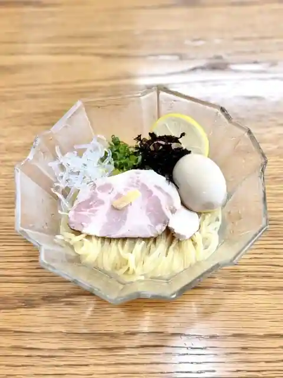
Katabami
味の里 おたふく
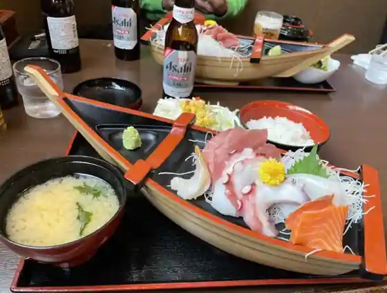
Aji No Sato Otafuku
めのじや
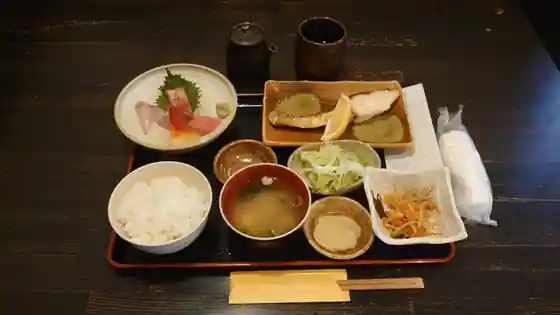
Menojiya
モンテマーレ
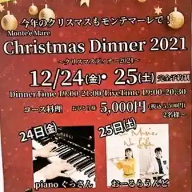
Montemare
五代目むじゃき
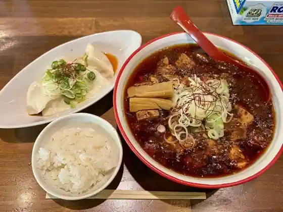
Godai Me Mujaki
豚男 -BUTAMEN-
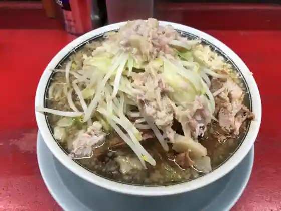
Butaotoko -BUTAMEN
おとと屋 菅谷店
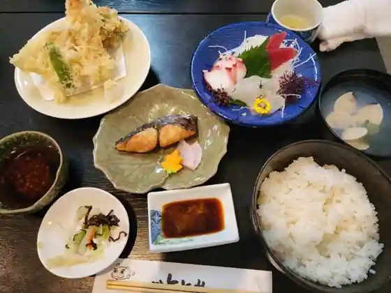
Ototo Ya Sugaya
木内酒造 本店
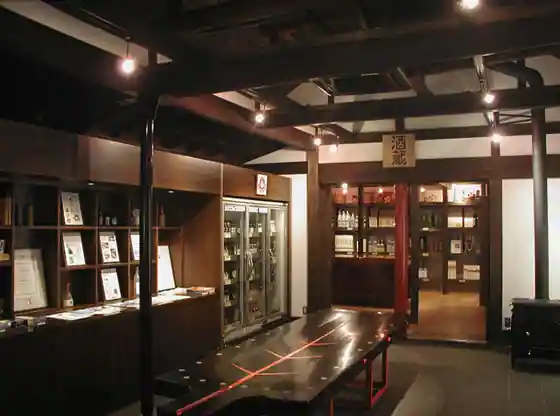
Kiuchi Shuzo Hon
いづみや 那珂町店
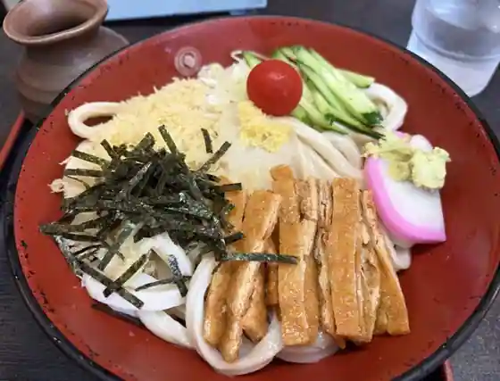
Izumiya Naka Machi
麺棒倶楽部
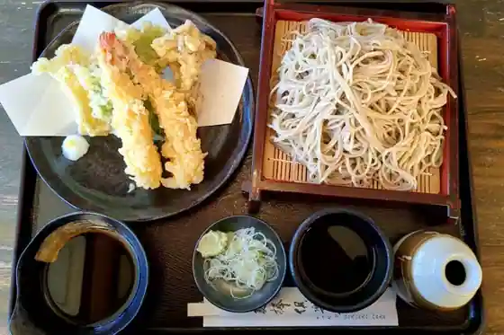
Menbo Kurabu
蕎麦五楽亭
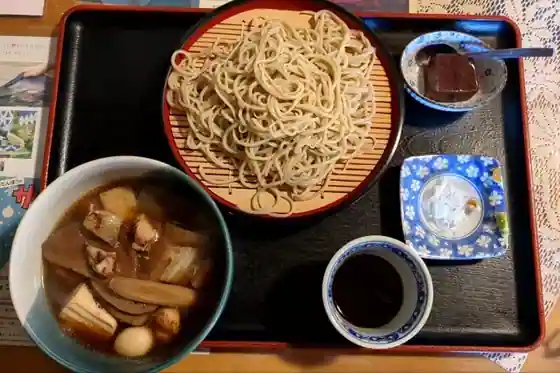
Soba Go Raku Tei
ハチカフェ
Hachi Cafe
あげや
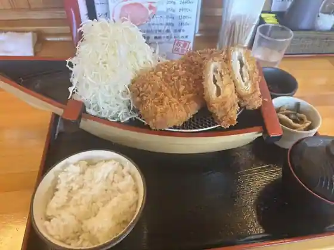
Ageya
にこにこハンバーグ ひまわり
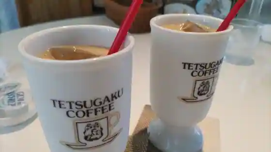
Nikoniko Hamburg Himawari
そば元本舗 那珂店
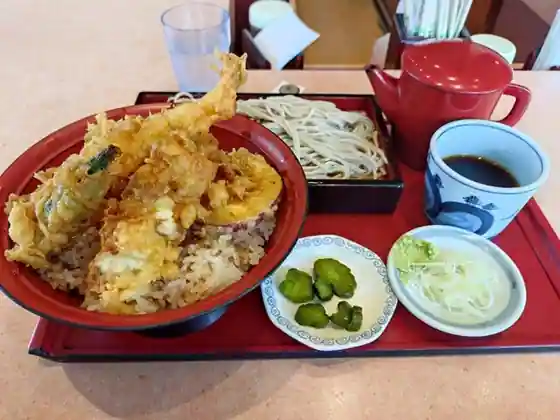
Soba Ganpon Ho Naka
ふじ庄
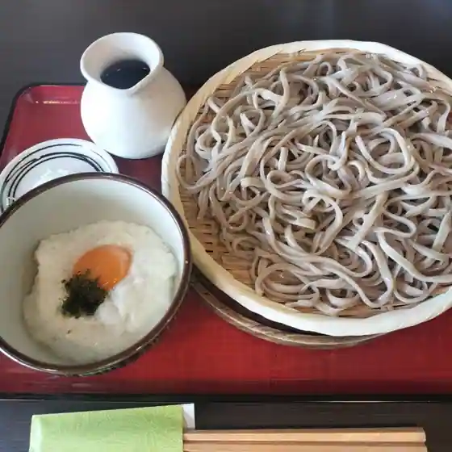
Fuji Sho
三亀
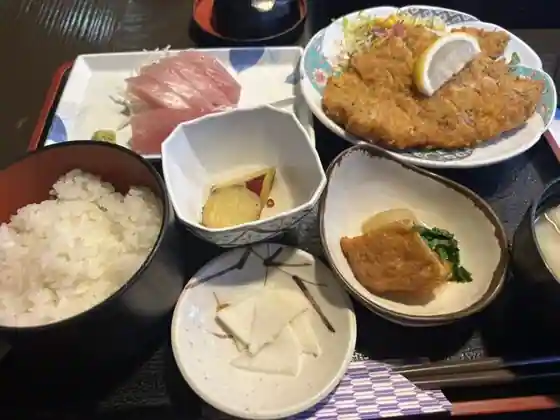
San Kame
ゴルディニ
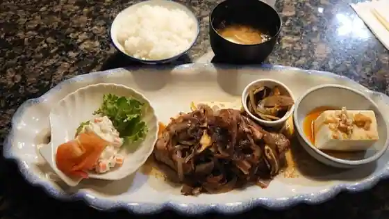
Gorudini
Sights
THE BOTANICAL RESORT Hayashi Oto (Rinne)

Kiuchi Shuzo

Sei Mine Furusato Park
Nukata Castle Ruins

Urizura Castle Ruins

Hitachi Ni no Miya Sei Shrine
National Kenkyukaihatsu Hojin Ryoshi Kagakugijutsu Kenkyukaihatsukiko Nakashi Fuyujon Kagakugijutsu Kenkyusho
Tonkatsu Hitosuji Katsu Kichi
JA Hitachi Nakashi Chokubai Tokoro
Amida Tera
Kotoku Numa
Ichi no Kan Tame Ike
Nakazato Tameike
Nakashi Folk History Museum
Fuji Sho
Te Tsukuri Tsukemono Wa no Kura
Mishima Shrine
Kura + Soba Na Ka Ya
Yoshino Chokubai Tokoro Mae Bun Hora Tameike